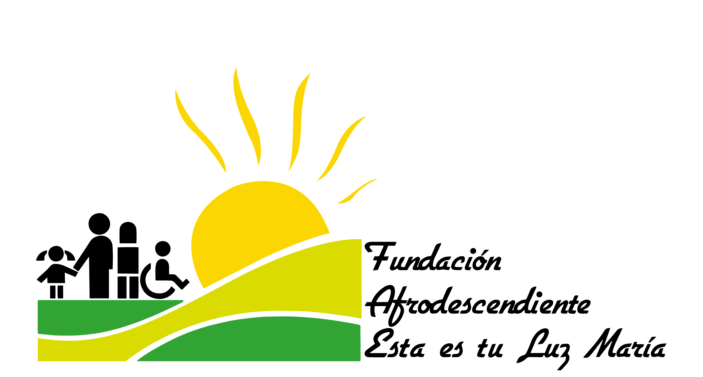

The foundation for the development of sustainable ideas and projects, is constituted as a response to the needs of vulnerable populations with differential characteristics, which demanded programs that took into account this differential approach and contribute to the improvement of their quality of life, this is how after its constitution, initiates the development of a series of initiatives to achieve this objective.


☰
OUR EXPERIENCE
CITY COUNCIL OF LOW LAND project strengthening fishermen association of Tierra Baja.
Prior Consultation Vía al Mar Consortium with the Afro descendant community of Tierra Baja.
Prior Consultation with the Vía 90 Project with the Afro-descendant communities of Tierra Baja, Puerto Rey and Bayuca.
Project of Exploration of the Equion Energy Company with the communities of the North Zone and the Insular Zone.
Legal accompaniment to the stone stream community in the process of prior consultation.
Development of training workshops for children in the framework of the "SEMILLERO MI TAMBO" project.
Realization of prior consultation of the waters of Cartagena underwater emissary project.
Project to strengthen the black community units of Caño del Oro
Aquaculture project association of fishermen of the black community of Bocachica.
Characterization of the process of characterization of the population displaced by violence in the municipality of Turbaco carried out by the Ministry of the Interior, Fupad and the Municipality of Turbaco.
Training of leaders in the framework of the institutional strengthening project of ASOCOC.
Formulation of a project to strengthen community productive units.
Management and development of community-based organizations.
Support in the realization of sport and cultural events.
Socioeconomic and cultural impact studies within the framework of the prior consultation of the Serena del Mar project.
Logistic operation in the process of the characterization process of the community councils of the northern zone in Cartagena by the interior ministry and Fupad.